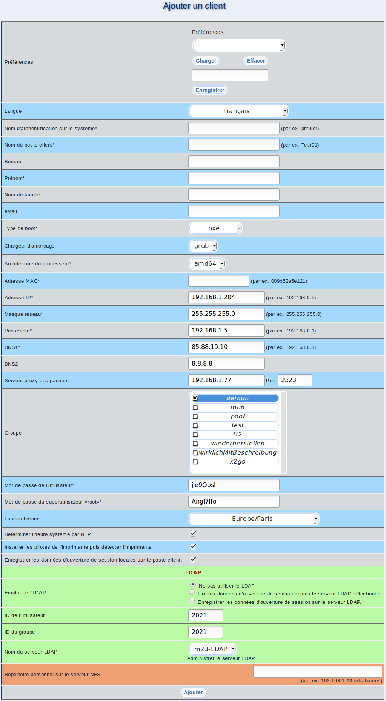

(les champs de saisie marquées avec * doivent être remplis correctement dans tous les cas)

- Préférences: Il vous est possible de choisir parmis les configurations déjà enregistrées, vous aurez par la suite la possibilité de les charger ou de les effacer. Si vous souhaitez enregistrer la configuration actuelle, entrez un nom pertinent et cliquez sur Enregistrer.
- Langue: Choisissez la langue du poste client m23. Cette langue sera employée pour le paramétrage du clavier, du bureau et de la console.
- Nom d'authentification sur le système: Compte de connexion de l'utilisateur sur le poste client.
- Nom du poste client: Nom unique du poste client ne devant être employé qu'une seule fois dans m23
- Bureau: Cette information est facultative, vous pouvez indiquer l'endroit où le poste client est localisé (par ex. le numéro et/ou l'étage de la pièce, etc )
- Langue: Choisissez la langue employée pour l'installation de votre poste client; elle sera employée également pour tous les programmes installés, pour le clavier et les options de pays.
- Prénom: Prénom de l'utilisateur, correspond au nom d'entrée dans le système
- Nom de famille: Nom de famille de l'utilisateur
- eMail: Adresse de courrier électronique de l'utilisateur
- Type de boot: Type de démarrage des postes clients par le réseau. (Notez: Si vous souhaitez utiliser m23 avec un serveur DHCP existant, lisez la page suivante: externalDHCP)
- Chargeur d'amorçage: Choisissez quel chargeur d'amorçage/boot loader vous souhaitez utiliser pour l'amorçage du noyau Linux et des autres systèmes d'exploitation eventuellement installés. Il vous est possible de choisir entre LILO (LInux LOader) et GRUB (GRand Unified Bootloader).
Sous-sections
dodger
2014-08-06